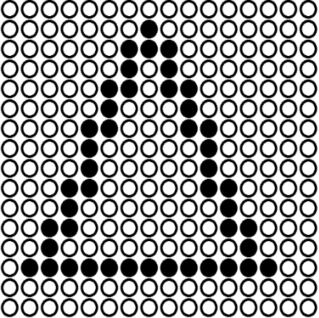
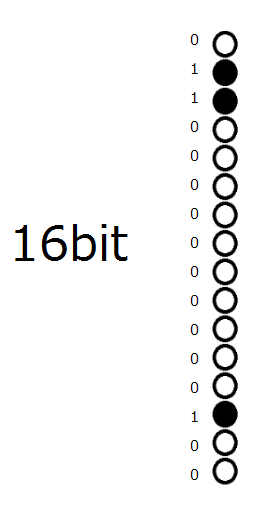

はじめに
この記事は,「Denkokeijiban」の技術解説記事です.
完成予想図
完成した後の,デモがコチラになります.
準備
- enchant.jsをダウンロードします.
- 電光掲示板のドットなる部分を作成します.(ここでは,リポジトリにあるものを使います.)
※NetBeansやEclipse,IntelliJIDEAなどの統合開発環境があると,開発効率が良くなります.
TeraPadやメモ帳,Vim,Emacs,sublimeTextなどのエディタのみでも開発できますので,お好みでどうぞ.
プロジェクトのディレクトリ構造
特に分けない場合は,projectディレクリを作成後,直下に置きましょう.
分ける場合は,以下のようにしましょう.
project/
├ js/
├ img/
├ lib/
└ index.html
js …JavaScriptの自作ソースを配置(dotmatrix.js)
img…素材となる画像を配置(onoff.png)
lib…外部で使うライブラリを配置(enchant.js)
index.html…jsを読み込む
原理・仕組み
ソースを作成する前に,電光掲示板がどのように動くかを知る必要があります.
文字表示
下の画像は16×16のドット文字です.

これを表示させるには,どうすればよいか.
以下の画像のように,16×1のパターンに分割してみるとできそうです.

縦を16bitと考えると,ON/OFFを1/0で考えることが出来ます.
そのため,上の画像では,上から並べると[0,1,1,0,0,0,0,0,0,0,0,0,0,1,0,0]となります.
これを見ると,パターン化できそうですね.
この考え方で,先ほどのデルタ文字（16×16）に適用します.
すると,以下の様な配列が作れます.
[0x0000,0x2000,0x3800,0x2e00,0x23c0,0x2070,0x201c,0x2006,0x201c,0x2070,0x23c0,0x2e00,0x3800,0x2000,0x0000,0x0000]
これが表示する文字パターンです.
スクロール
スクロールはenchant.jsを使えば,実装は容易です.
今表示している状態から,先頭の配列を削除し,次に表示する配列を末尾に追加するだけです.
詳しいことは,ソースコードの説明時に記載します.
電光掲示板の原理が,だいたいわかったところでソースコードを作成します.
※ハードウェアで製作する場合は,「ダイナミック点灯」などを意識する必要があります.
本プログラムでは,ソフトウェアのみで実装しているので,ハードウェア特有の実装はしていません.
機能
ユーザの入力によって,自作の電光掲示板に文字を出力する.
設計
ソースコードを作成にとりかかりたいところですが,具体的にどういう関数があると良いかを考えます.
機能から,考えると以下の手順になりそうです.
- ユーザから文字を受け取る.
- 受け取った文字を,用意している文字パターンと照合する.
(受け取った文字を文字パターン配列に変換)
- 文字パターンを16進数から2進数に変換する.(データを扱いやすくするため)
- パターンを読み出し,電光掲示板に出力する.
※追加で必要なもの…16×16の文字パターン表
(用意がなければ,リポジトリのものを使いましょう.)
各ソースの作成
クラスの作成
以下をクラス化する.
ソース
Data Class1
2
3
4
5
6
7
8
9
10
11
12
13
14
| Data = Class.create(Sprite,{
initialize: function()
{
Sprite.call(this,32,32);
this.frame=0;
this.x=0;
this.y=0;
this.image = game.assets['onoff.png'];
},
set:function(num)
{
this.frame= num;
}
});
|
データクラスは1ドットを表す.
スプライトと呼ばれる画像をもたせている.
また,on/off状態はframeという変数で切り替えられる.(enchant.js参照)
状態を切り替えるための,setメソッドを持つ.
Filed Class1
2
3
4
5
6
7
8
9
10
11
12
13
14
15
16
17
18
19
20
21
22
23
24
25
26
27
28
29
30
31
32
33
34
35
36
37
38
39
40
41
42
43
44
45
46
47
48
49
50
51
52
53
54
55
56
57
58
59
60
61
62
63
64
65
66
67
68
69
70
71
72
73
74
75
76
| Field = Class.create(Sprite,{
initialize:function()
{
this.counter=0;
this.field = new Array(16);
for(var i=0;i<16;i++){
this.field[i] = new Array(48);
}
for(var i=0;i<this.field.length;i++){
for(var j=0;j<this.field[i].length;j++){
this.field[i][j]=new Data();
}
}
this.show();
},
show:function()
{
var i,j;
for(i=0;i<16;i++){
for(j=0;j<48;j++){
game.rootScene.addChild(this.field[i][j]);
this.field[i][j].x = 32*j;
this.field[i][j].y = 32*i;
}
j=0;
this.field[i][j].y = 32*i;
}
},
setValue:function(x,y,value)
{
this.field[x][y].set(value);
},
setColumn:function(column,array)
{
for(var i=15;i>=0;i--){
this.setValue(i,column,array[15-i]);
}
},
step:function()
{
this.shiftField("left");
},
shiftField:function(which)
{
var tmp=new Array(16);
for(var i=0;i<16;i++){
tmp[i] =new Data();
}
if(which=="left"){
for(var i=0;i<16;i++){
this.field[i].shift();
this.addFinalArray();
}
}else if(which=="right"){
}else{
}
},
addFinalArray:function(){
for(var i=0;i<16;i++){
this.field[i].push(new Data());
}
},
changeFinalArray:function(array){
for(var i=0;i<16;i++){
this.setColumn(47,array);
}
}
});
|
Filedクラスは,電光掲示板を表す.
作成したフィールドは,3文字表示をさせるため,16*48の２次元配列をもつ.
メソッド
- show … 電光掲示板を画面に出力する
- setValue … xとy(位置)を指定し,on/offの状態を設定する.
- setColumn … column(列番号)とarray(配列)を受け取り,arrayパターンと同様の値を設定する.
- step … 電光掲示板をスクロールさせる.
- shiftFiled … フィールドをシフト(左か右)させる.
- addFinalArray … 2次元配列の末尾に空の配列を追加する.
- changeFinalArray … 末尾配列を引数の配列にする.
関数の作成
以下の関数を作成する.
(抽象的な関数は,上位の方である)
—-上位モジュール —-
- 文字列を16進数の配列に変換する.2次元配列を返す. (stringPatternEncode)
- 文字列を文字パターン配列に変換する.(characterPattern)
- ユーザから受け取った文字列を数値に変換し,その配列を返す.(pickUp)
- 16進数を2進数に変換し,配列にしその値を返す.(decode16to2)
- 16進数を2進数に変換し,文字列を返す.(decode)
- 4bitの文字列に変換する(数値で扱うと,値が丸められる場合がある) (addZero)
—-下位モジュール —-
これらの関数の実装は,簡素になっているため説明は省略する.
続いてメインソースである.
メインソース1
2
3
4
5
6
7
8
9
10
11
12
13
14
15
16
17
18
19
20
21
22
23
24
25
26
27
28
29
30
31
32
33
34
35
36
37
38
39
40
41
42
43
44
45
46
47
48
49
50
51
52
53
54
55
56
| enchant();
var game;
* Core
* -rootScene
* --Sprite
*/
window.onload = function(){
game = new Game(1536,512);
game.fps=30;
game.preload("onoff.png");
game.rootScene.backgroundColor = "white";
* メイン動作
*/
game.onload=function(){
var field1 = new Field();
var string="λωθΔ∇＝２ｘ＋３４";
var array=new Array();
for(var i=0;i < string.length;i++){
array[i] = new Array(16);
}
array = stringPatternEncode(string);
var i=0;
var index=0;
console.log(array.length);
game.rootScene.addEventListener('enterframe',function(){
if(i<16){
if(i==15){
i=0;
index++;
}else if(array.length==index){
field1.show();
field1.step();
}else{
field1.show();
field1.changeFinalArray(arrayConvert(array[index],i));
field1.step();
i++;
}
}
});
};
game.start();
};
|
メインソースはenchant.js特有の記述が多くなるため,その知識が必要となる.
game.onloadは,gameがはじまったときに,動作する関数である.(main関数)
関数は
- fieldを生成
- user文字を変数に格納
- stringPatternEncode関数によって,ユーザ入力文字を２次元配列に変換する.
- addEventLister(‘enterFrame(毎フレーム実行されるイベント)’)にて,毎フレーム呼びださる関数を生成する.
function() 以下に記述したプログラムが動作する.
- function()以下は,スクロールさせるようなプログラムを記述している.
一部ソースを掲載する.
全ソースはGitHubのリポジトリを参照
一部ソース1
2
3
4
5
6
7
8
9
10
11
12
13
14
15
16
17
18
19
20
21
22
23
24
25
26
27
28
29
30
31
32
33
34
35
36
37
38
39
40
41
42
43
44
45
46
47
48
49
50
51
52
53
54
55
56
57
58
59
60
61
62
63
64
65
66
67
68
69
70
71
72
73
74
75
76
77
78
79
80
81
82
83
84
85
86
87
88
89
90
91
92
93
94
95
96
97
98
99
100
101
102
103
104
105
106
107
108
109
110
111
112
113
114
115
116
117
118
119
120
121
122
123
124
125
126
127
128
129
130
131
132
133
134
135
136
137
138
139
140
141
142
143
144
145
146
147
148
149
150
151
152
153
154
155
156
157
158
159
160
161
162
163
164
165
166
167
168
169
170
171
172
173
174
175
176
177
178
179
180
181
182
183
184
185
186
187
188
189
190
191
192
193
194
195
196
197
198
199
200
201
202
203
204
205
206
207
208
209
210
211
212
213
214
215
216
217
218
219
220
221
222
223
224
225
226
227
228
229
230
231
232
233
234
235
236
237
238
| enchant();
var game;
* Core
* -rootScene
* --Sprite
*/
window.onload = function(){
game = new Game(1536,512);
game.fps=30;
game.preload("onoff.png");
game.rootScene.backgroundColor = "white";
* メイン動作
*/
game.onload=function(){
var field1 = new Field();
var string="λωθΔ∇＝２ｘ＋３４";
var array=new Array();
for(var i=0;i < string.length;i++){
array[i] = new Array(16);
}
array = stringPatternEncode(string);
var i=0;
var index=0;
console.log(array.length);
game.rootScene.addEventListener('enterframe',function(){
if(i<16){
if(i==15){
i=0;
index++;
}else if(array.length==index){
field1.show();
field1.step();
}else{
field1.show();
field1.changeFinalArray(arrayConvert(array[index],i));
field1.step();
i++;
}
}
});
};
game.start();
};
Data = Class.create(Sprite,{
initialize: function()
{
Sprite.call(this,32,32);
this.frame=0;
this.x=0;
this.y=0;
this.image = game.assets['onoff.png'];
},
set:function(num)
{
this.frame= num;
}
});
Field = Class.create(Sprite,{
initialize:function()
{
this.counter=0;
this.field = new Array(16);
for(var i=0;i<16;i++){
this.field[i] = new Array(48);
}
for(var i=0;i<this.field.length;i++){
for(var j=0;j<this.field[i].length;j++){
this.field[i][j]=new Data();
}
}
this.show();
},
show:function()
{
var i,j;
for(i=0;i<16;i++){
for(j=0;j<48;j++){
game.rootScene.addChild(this.field[i][j]);
this.field[i][j].x = 32*j;
this.field[i][j].y = 32*i;
}
j=0;
this.field[i][j].y = 32*i;
}
},
setValue:function(x,y,value)
{
this.field[x][y].set(value);
},
setColumn:function(column,array)
{
for(var i=15;i>=0;i--){
this.setValue(i,column,array[15-i]);
}
},
step:function()
{
this.shiftField("left");
},
shiftField:function(which)
{
var tmp=new Array(16);
for(var i=0;i<16;i++){
tmp[i] =new Data();
}
if(which=="left"){
for(var i=0;i<16;i++){
this.field[i].shift();
this.addFinalArray();
}
}else if(which=="right"){
}else{
}
},
addFinalArray:function(){
for(var i=0;i<16;i++){
this.field[i].push(new Data());
}
},
changeFinalArray:function(array){
for(var i=0;i<16;i++){
this.setColumn(47,array);
}
}
});
function decode16to2(Pattern){
var str = Pattern.toString(16);
var str_d="";
str= addZero(str);
for(var i=0;i<str.length;i++){
str_d = str_d + decode(str.charAt(i));
}
return pickUp(str_d);
}
function pickUp(str){
var array = [];
for(var i=0;i<str.length;i++){
array[i] = parseInt(str.charAt(i),10);
}
return array;
}
function addZero(str){
if(str.length==1){
str = "000" + str;
}else if(str.length==2){
str = "00" + str;
}else if(str.length==3){
str = "0" + str;
}else if(str.length==4){
}else{
}
return str;
}
function decode(char){
var str;
switch(char){
case "0":str="0000";
break;
case "1":str="0001";
break;
case "2":str="0010";
break;
case "3":str="0011";
break;
case "4":str="0100";
break;
case "5":str="0101";
break;
case "6":str="0110";
break;
case "7":str="0111";
break;
case "8":str="1000";
break;
case "9":str="1001";
break;
case "a":str="1010";
break;
case "b":str="1011";
break;
case "c":str="1100";
break;
case "d":str="1101";
break;
case "e":str="1110";
break;
case "f":str="1111";
break;
}
return str;
}
function arrayConvert(array,i){
return decode16to2(array[i]);
}
function stringPatternEncode(string){
var array=new Array(string.length);
for(var i=0;i<string.length;i++){
array[i] = new Array(16);
}
for(var i=0;i<string.length;i++){
array[i]=characterPattern(string.charAt(i));
}
return array;
}
|
完成したもの
デモの通りである.